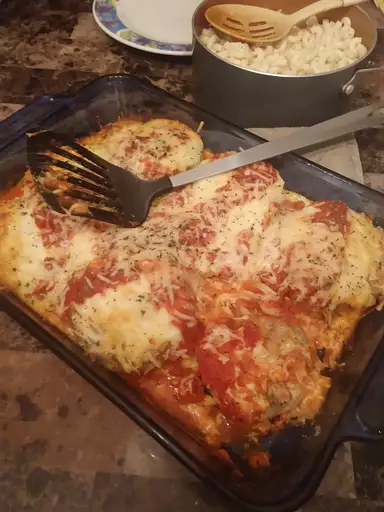

Baked Eggplant Parmesan

Here is yummy baked version of Eggplant Parmesan!
Ingredients
- 2 eggplant, peeled and cut into 1/2-inch slices
- 1 tablespoon salt, or as needed
- 1 cup Italian-style bread crumbs
- ¼ cup grated Parmesan cheese
- 2 eggs, beaten
- 1 (28 ounce) jar garlic-and-tomato pasta sauce
- ¼ cup grated Parmesan cheese
- 1 (16 ounce) package shredded mozzarella cheese, or as needed
- ½ teaspoon dried basil
Directions:
- Place eggplant slices in a colander; sprinkle both sides of each slice with salt. Allow to sit for at least 3 hours. Wipe excess moisture from eggplant slices with paper towels.
- Preheat the oven to 350 degrees F (175 degrees C). Grease a baking sheet.
- Mix bread crumbs and 1/4 cup Parmesan cheese together in a shallow bowl. Beat eggs in a separate shallow bowl.
- Dip eggplant slices in beaten egg. Lift up so excess egg drips back into the bowl. Press into bread crumbs to coat both sides; arrange coated eggplant slices in a single layer on the prepared baking sheet.
- Bake in the preheated oven until lightly browned and crisp, about 5 minutes per side.
- Cover the bottom of a 9x13-inch casserole dish with a layer of pasta sauce; top with a layer of eggplant slices. Sprinkle with about 1 tablespoon of the remaining Parmesan cheese and 1/3 of the mozzarella cheese. Repeat layers with remaining ingredients, ending with a cheese layer. Sprinkle with basil.
- Bake in the preheated oven until cheese is bubbling and golden brown, about 35 minutes.